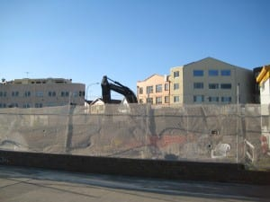
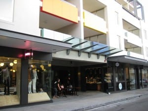
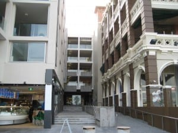
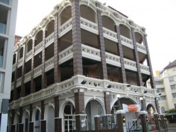
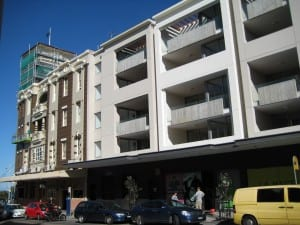

Well, I’ve found the courage and I’m in the saddle…writing this now…
It has indeed been close to 5 years, that’s FIVE years! since I’ve published a post here. I wrote a couple of draft posts in that time, but never published them.
I guess I had this long hiatus for more than one reason, and not the least of which is that Life has been extremely busy and demanding for me these past few years, to the extent that I deprived myself of sleep for a long time. So I had to leave some things aside and accept that I can’t always do everything I want, when I want. Sometimes you just have to surrender for a bit. Also, during the last five years, so many more changes and developments have been going on in Bondi, which I’ve found a little overwhelming, and just needed some time to process everything. I think I’ve processed enough for now. Which brings me to this post…
Sometimes, in order for someone to take action on something that they need to do, it takes for a crisis to happen, to motivate the action. Maybe this is what is going on for me right now (see, I’m still processing…)
We are in a crisis at the moment. ‘We’ being not just Bondi, not just Sydney or NSW or Australia, but the whole world. This COVID-19 / corona virus pandemic has been the biggest game changer that most of us have ever seen in our entire lives, and it has literally just very quickly descended upon our world and is causing a huge disruption in all facets of our everyday lives.
Yesterday was a beautiful sunny, 28degree Sunday afternoon in Bondi. Normally, the beach and Campbell Parade would have been packed. But not yesterday. The beach itself was completely empty. This is because about 24 hours prior, Bondi Beach was officially closed by the authorities. It is still closed and will remain closed indefinitely. This is the first time that an indefinite closure of the beach has been enforced since World War II. The closure was a reaction to the lack of adherence by beach goers, to the social distancing rules that the authorities set up, in order to curb the spread of the virus. The behaviour of some beach goers seemed to disregard this directive, and has potentially put many people’s lives at risk. Thus the decision was made to close access to the beach and water. This public health order gives NSW Police law enforcement powers. Breaching the closure could land you in jail for 6 months or an $11,000 fine. As our politicians keep saying, these are ”unprecedented times.”


Image supplied: Courtesy Waverley Library
The architectural design of Boheme is OK, though it doesn’t really do all that much for me. I can see a building like this perched on a hill somewhere in the Northern Beaches area of Sydney. But I don’t really see how it blends into the Bondi art-deco urban landscape. It seems to be quite out of place here to me, although the price tag for such real estate is unfortunately not out of place here – these days. Boheme was apparently designed by “interior architects” Bates Smart.

'Boheme' perched above Adina hotel and apartments, Hall Street, Bondi
Still, although I was a little sad to see the demolition of the Hakoah Club (and a bit of Bondi history go with it), I’m trying to embrace this new Hall Street development as part and parcel of urban change. I can see how these additions and other recent changes to Hall Street could be attractive to Bondi visitors and tourists, but maybe less so for long-time locals!
Personally, I haven’t spent a lot of time there, but I have ducked into Harris Farm late at night here and there to do a bit of shopping, in quiet time, which has been convenient.
It appears that others, like Paul Paech, have also written about this change to Hall Street.
I’m very interested to hear what Bondi Banter visitors think of the changes in Hall Street, so please feel free to rant or banter away…
]]>
Mr Battlescar chilling out in the van on Queen Elizabeth Drive, 26/1/14
So here we are, in Autumn, all of us wondering where on earth the last few months have gone! Life just seems to get faster and faster as you age.
As for Bondi, it is still as busy as ever, still impossible to find a parking spot on the weekends and still hosting many changes to its landscape.
There is now a proposal being highly publicised by Waverley Council, to significantly change the beachfront area of Bondi.
I won’t go into all these changes here since they are already well-documented online (and in the traditional media), but I just want to say that the proposal is not insignificant; clearly lots of money and energy have already gone into this research and development phase of the proposal.

Flyer from Have Your Say day, 5th May 2013
Apart from the North Bondi Surf Club clubhouse – which is still being built – if all the proposed changes to the Bondi Pavilion and Bondi Park are approved and green lit, they would probably represent the biggest visual changes made to the now famous beachfront area in many years.
Just the other day, Waverley Council held a Have Your Say day at the Pavilion. I went along to ask questions and learn a bit more about what exactly is being proposed. On the face of it, it all sounds OK. But I do think the Council are treading a bit conservatively putting an effort in to manage the spin. They’re being very careful in their choice of language, (and somewhat vague when it comes to logistics and details), regarding the proposed changes, and there are still a number of issues not really being considered. Like…What if you do remove the parking from the beachfront? then you have an underground car park with approximately the same no of spaces, BUT can you imagine the road rage when it would take you one hour to get out the car park on a busy hot summer’s day?? At least when you’re in a traffic jam on the beachfront on such days you get to look at the pretty sights that Bondi has to offer!
]]>Here are a couple of photos from last year showing the site with the Club in rubble…

the Hakoah Club site seen from Hall Street, July 2011

the Hakoah Club site seen from O'Brien Street, July 2011
And here is a photo of the new building, Boheme, still incomplete, on the Hakoah Club site. I snapped this pic last week.

Boheme, still under construction, where the Hakoah Club stood
Bates Smart, the designers of Boheme, state on their website, that the Hakoah Club was “the social headquarters of Sydney’s Jewish community for 35 years.”
Yes, the club was certainly an important social space for many people in the Eastern Suburbs Jewish community – dare I suggest, particularly for the over 50s. It was a football (soccer) club and a social venue, but I don’t know how many people in Sydney’s Jewish community would agree with the statement that the Hakoah Club was “the social headquarters” of Sydney’s Jewish community.
Like most other ethnic groups, the Sydney Jewish community comprises a diverse group of people who chose to socialise in many different ways. The Hakoah Club was one venue in Sydney were such socialisation occurred.
In any case, I don’t really know what else I can say about this new megalith here, except that it will no doubt change the landscape and culture of the Hall Street I‘ve known for the past 35 years.
The Hakoah Club in Hall Street is now well and truly history.
Let’s see what commercial and real estate wonders Boheme will contribute to the Bondi community. I await in anticipation, and while I do, I am interested in reader’s comments….
]]>
The North Bondi Surf Life Saving Club as it was in June 2012
Now you don’t.

Post-demolition of the North Bondi Surf Life Saving Club, early September 2012
In May this year the North Bondi Surf Life Saving Club (SLSC) voted to replace the existing Clubhouse with a new building.
The word got around and signage went up…

The clean-out had begun, but funds were still needed for the new building
Then a few weeks ago, the iconic building, that has stood on the promenade for 77 years (where Ramsgate Avenue meets Campbell Parade), turned to rubble.
Like many other buildings that had always been part of the Bondi I knew, the old North Bondi Surf Club building was demolished and is no longer part of the Bondi landscape.
At a cost of several million dollars, the new Bondi Surf Club building will comprise four levels, including a dug out basement to store boats, skis and training equipment.
As stated in a flyer that the North Bondi SLSC circulated to gather support and donations for the new building…
“the design of the new Club aims to capture the gentle arc of the beach at Bondi. It will provide a modern, state of the art facility for volunteers who patrol the beach. It will become a symbol of the traditions of a truly great lifesaving club and will demonstrate the pursuit of excellence which lies at the heart of the club’s long tradition.”
Nothing lasts forever and urban development is well and truly now part of the “Bondi character” but it is understandable that the building that previously occupied the space where the North Bondi SLSC stood, was no longer sufficiently serving the needs of the Club nor it’s large membership.
When a family grows, it needs a bigger house and so the family often moves. But you can’t move the Clubhouse away from the beach, and so I guess that the most sensible alternative was to replace it with a building that would be more functional for the needs of the Club in 2012 and beyond.
This is what the site looked like yesterday…

The digging has begun...
I will miss seeing the old “Pizza Hut” building on the promenade at North Bondi. So it is with a sense of reluctant acceptance that I await to see the new Clubhouse erected on the ever changing Bondi Beach landscape.
These images of the previous two North Bondi Surf Live Saving Clubhouses and the upcoming future Clubhouse, are taken from the flyer that the North Bondi SLSC circulated earlier this year, to gather support and donations for the new building.

According to the stats, it’s been the coldest summer since 1965, the coldest December in 51 years and the coldest and wettest January in 11 years.
Lots has been written about and spoken about the weather here in Oz of late.
For example, check out these links to the ABC and the Wentworth Courier websites.
Queenslanders had to endure bad floods (again) and Sydney has had the worst summer that anyone here can remember – well around my vintage anyway.
Rain, rain and rain, cold temparutes and almost every day has been like four seasons in one day. Not the stock standard summers us Sydneysiders are used to.
But the weather is something you can’t change – you just have to deal with it.
Apparently it’s all due to El Nino and climate change.
Despite mother nature trying to mess with our heads, there have been some glorious days at Bondi Beach over the last few weeks – it’s just that there has been way too much grey sky in between.
]]>
Two bikini gals walking up O'Brien St, just past intersection with Glenayr Ave
Well summer is slowly settling in (very slowly this year) and the body parading in Bondi will soon be at its peak. OK, so in a beach suburb it is normal to wear and to be around people wearing very light and minimal clothing such as shorts with bikini tops (for women) and just shorts (for men). This is quite acceptable in a beach area such as Bondi and the streets, shops and cafes are often filled with people walking around in only their togs, budgie smugglers, bikinis, bathing costumes, swimmers and whatever else we might call our beach and swimming gear.
Whenever I visit other beaches both in Australia and overseas, the same applies.
BUT, (forgetting wetsuits and rashys), I have often wondered just how far away from the beach can you get away with walking around in just a bikini? And are there certain criteria which make it OK and not OK? For example, is it acceptable for a young woman of 15 or younger to walk around in a bikini several blocks away from the beach but not a woman of say 30 or older? Or is the acceptability dependent upon how many blocks away from the beach we’re talking about?
Just to be clear, I’m not referring to a woman who is wearing a bikini top with a towel wrapped around the waist (as I often tend to head home in!). I’m talking about wearing just a bikini and nothing else.
I don’t recall ever seeing someone walking around Bondi Junction in only a bikini so I’m assuming that somehow there is an understood rule that the Junction is too far for bikini-wearing to be acceptable. And fair enough too, since it is a good 20 minutes walk at least to the Junction from the beach. So if we’re talking distance, does anyone have any ideas what the general rule is on this?
I’m really curious for your thoughts on bikini wearing beyond the beach…how far is OK and far is not OK? and how is the acceptability factor measured?
]]>
Gould Street, showing the street level of The Beach House apartments
There is this kind of arcade now between Gould and Campbell, which also houses the entrance to the key aspect of this development, an apartment complex known as The Beach House.

View of the walk-through looking towards Campbell Parade from Gould St, June 2011
I have to confess that as much as I’d like the brakes to be put on all the development here in Bondi, from an objective point of view, the outcome of this particular development isn’t too bad. The walk-through is a bit dark and lifeless, but the upside of the destruction of the old “Bondi Tram” part of the Bondi Hotel, means that you can now see the Bondi Hotel’s side view which was previously obstructed by the adjoining part of the hotel. This new Beach House development has allowed that side view of the building to be visible and stand-alone. You can therefore appreciate the architecture of the southern side view of the Bondi Hotel more fully now. But unfortunately, I still think aesthetically, the look of the building from Curlewis Street is affected by this new development. I’d like to hear your comments on this.
I don’t recall seeing the Bondi Hotel like this before. If anyone knows, I’d be interested to know when this side aspect of the Bondi Hotel was first obstructed by the adjoining extension of the Hotel, i.e. in what year?
There are some pics I snapped of this development exactly one year ago that I posted on the page in this blog More Development Shvelopment. You can see the paint-job done on the Hotel. I think that is an improvement.

The new walk-through from Campbell Parade to Gould Street, June 2011

The Bondi Hotel, June 2011

The Bondi Hotel as seen from Curlewis St, June 2011